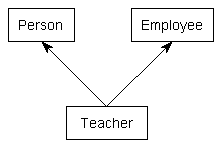
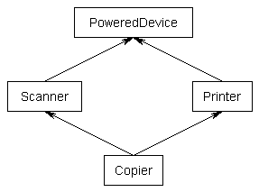

24.9 — Héritage multiple
Jusqu'ici, tous les exemples d'héritage que nous avons présentés étaient de l'héritage simple, c'est-à-dire que chaque classe dérivée n'a qu'une seule et unique classe parente. Cependant, C++ permet de réaliser un héritage multiple. L'héritage multiple permet à une classe dérivée d'hériter des membres de plusieurs parents.
Imaginons que nous voulions écrire un programme pour suivre un ensemble d'enseignants. Un enseignant est une personne. Cependant, un enseignant est aussi un employé (il est son propre employeur s'il travaille à son compte). L'héritage multiple peut être utilisé pour créer une classe Teacher qui hérite des propriétés à la fois de Person et d'Employee. Pour utiliser l'héritage multiple, il suffit de spécifier chaque classe de base (comme pour l'héritage simple), séparées par une virgule.

#include <string>
#include <string_view>
class Person
{
private:
std::string m_name{};
int m_age{};
public:
Person(std::string_view name, int age)
: m_name{ name }, m_age{ age }
{
}
const std::string& getName() const { return m_name; }
int getAge() const { return m_age; }
};
class Employee
{
private:
std::string m_employer{};
double m_wage{};
public:
Employee(std::string_view employer, double wage)
: m_employer{ employer }, m_wage{ wage }
{
}
const std::string& getEmployer() const { return m_employer; }
double getWage() const { return m_wage; }
};
// Teacher hérite publiquement de Person et de Employee
class Teacher : public Person, public Employee
{
private:
int m_teachesGrade{};
public:
Teacher(std::string_view name, int age, std::string_view employer, double wage, int teachesGrade)
: Person{ name, age }, Employee{ employer, wage }, m_teachesGrade{ teachesGrade }
{
}
};
int main()
{
Teacher t{ "Mary", 45, "Boo", 14.3, 8 };
return 0;
}
Mixins
Un mixin (parfois écrit « mix-in ») est une petite classe dont on peut hériter afin d'ajouter des propriétés à une classe. Le nom mixin indique que la classe est destinée à être mélangée à d'autres classes, et non à être instanciée seule.
Dans l'exemple suivant, les classes Box, Label et Tooltip sont des mixins dont nous héritons pour créer une nouvelle classe Button.
// Merci au lecteur Waldo pour cet exemple
#include <string>
struct Point2D
{
int x{};
int y{};
};
class Box // classe mixin Box
{
public:
void setTopLeft(Point2D point) { m_topLeft = point; }
void setBottomRight(Point2D point) { m_bottomRight = point; }
private:
Point2D m_topLeft{};
Point2D m_bottomRight{};
};
class Label // classe mixin Label
{
public:
void setText(const std::string_view str) { m_text = str; }
void setFontSize(int fontSize) { m_fontSize = fontSize; }
private:
std::string m_text{};
int m_fontSize{};
};
class Tooltip // classe mixin Tooltip
{
public:
void setText(const std::string_view str) { m_text = str; }
private:
std::string m_text{};
};
class Button : public Box, public Label, public Tooltip {}; // Button utilisant trois mixins
int main()
{
Button button{};
button.Box::setTopLeft({ 1, 1 });
button.Box::setBottomRight({ 10, 10 });
button.Label::setText("Submit");
button.Label::setFontSize(6);
button.Tooltip::setText("Submit the form to the server");
}
Vous vous demandez peut-être pourquoi nous utilisons les préfixes explicites de résolution de portée Box::, Label:: et Tooltip:: alors que ce n'est pas nécessaire dans la plupart des cas.
Label::setText()etTooltip::setText()ont le même prototype. Si nous appelionsbutton.setText(), le compilateur produirait une erreur de compilation due à un appel de fonction ambigu. Dans de tels cas, nous devons utiliser le préfixe pour indiquer la version que nous voulons.- Dans les cas non ambigus, utiliser le nom du mixin sert de documentation indiquant à quel mixin s'applique l'appel de fonction, ce qui rend le code plus facile à comprendre.
- Des cas non ambigus peuvent devenir ambigus à l'avenir si nous ajoutons de nouveaux mixins. Utiliser des préfixes explicites permet d'éviter que cela ne se produise.
Pour les lecteurs avancés
Les mixins étant conçus pour ajouter des fonctionnalités à la classe dérivée, et non pour fournir une interface, ils n'utilisent généralement pas de fonctions virtuelles (abordées dans le prochain chapitre). Si une classe mixin doit être personnalisée pour fonctionner d'une manière particulière, on utilise généralement des modèles (templates). C'est pourquoi les classes mixins sont souvent paramétrées par des modèles.
Il peut être surprenant de constater qu'une classe dérivée peut hériter d'une classe de base mixin en utilisant la classe dérivée elle-même comme paramètre de type du modèle. Un tel héritage est appelé Curiously Recurring Template Pattern (CRTP en abrégé), et s'écrit ainsi :
// The Curiously Recurring Template Pattern (CRTP)
template <class T>
class Mixin
{
// Mixin<T> peut utiliser le paramètre de type T pour accéder aux membres de Derived
// via (static_cast<T*>(this))
};
class Derived : public Mixin<Derived>
{
};
Vous trouverez un exemple simple utilisant CRTP ici.
Problèmes de l'héritage multiple
Bien que l'héritage multiple semble être une simple extension de l'héritage simple, il introduit de nombreux problèmes qui peuvent sensiblement augmenter la complexité des programmes et les transformer en cauchemar de maintenance. Examinons certaines de ces situations.
Premièrement, une ambiguïté peut survenir lorsque plusieurs classes de base contiennent une fonction portant le même nom. Par exemple :
#include <iostream>
class USBDevice
{
private:
long m_id {};
public:
USBDevice(long id)
: m_id { id }
{
}
long getID() const { return m_id; }
};
class NetworkDevice
{
private:
long m_id {};
public:
NetworkDevice(long id)
: m_id { id }
{
}
long getID() const { return m_id; }
};
class WirelessAdapter: public USBDevice, public NetworkDevice
{
public:
WirelessAdapter(long usbId, long networkId)
: USBDevice { usbId }, NetworkDevice { networkId }
{
}
};
int main()
{
WirelessAdapter c54G { 5442, 181742 };
std::cout << c54G.getID(); // Quel getID() appelons-nous ?
return 0;
}
Lorsque c54G.getID() est compilé, le compilateur regarde si WirelessAdapter contient une fonction nommée getID(). Ce n'est pas le cas. Le compilateur examine alors si l'une des classes parentes possède une fonction nommée getID(). Voyez-vous le problème ? c54G contient en réalité DEUX fonctions getID() : l'une héritée de USBDevice, et l'autre héritée de NetworkDevice. Par conséquent, cet appel de fonction est ambigu, et vous obtiendrez une erreur de compilation si vous tentez de le compiler.
Il existe toutefois un moyen de contourner ce problème : vous pouvez indiquer explicitement la version que vous souhaitez appeler :
int main()
{
WirelessAdapter c54G { 5442, 181742 };
std::cout << c54G.USBDevice::getID();
return 0;
}
Bien que ce contournement soit assez simple, vous pouvez voir comment les choses peuvent se complexifier lorsque votre classe hérite de quatre ou six classes de base, elles-mêmes issues d'autres classes. Le risque de conflits de noms augmente de manière exponentielle à mesure que vous héritez de davantage de classes, et chacun de ces conflits doit être résolu explicitement.
Deuxièmement, et de manière plus sérieuse, il y a le problème du diamant, que votre auteur aime appeler le « diamant de la perdition ». Il survient lorsqu'une classe hérite multiplement de deux classes qui héritent chacune d'une même classe de base. Cela produit une structure d'héritage en forme de losange.
Considérons par exemple l'ensemble de classes suivant :
class PoweredDevice
{
};
class Scanner: public PoweredDevice
{
};
class Printer: public PoweredDevice
{
};
class Copier: public Scanner, public Printer
{
};

Les scanners et les imprimantes sont tous deux des appareils électriques, ils dérivent donc de PoweredDevice. Cependant, une photocopieuse intègre les fonctionnalités à la fois des scanners et des imprimantes.
Plusieurs problèmes se posent dans ce contexte, notamment : Copier doit-il posséder une ou deux copies de PoweredDevice, et comment résoudre certains types de références ambiguës ? Si la plupart de ces problèmes peuvent être résolus par une qualification de portée explicite, la charge de maintenance ajoutée à vos classes pour gérer cette complexité supplémentaire peut faire exploser le temps de développement. Nous reviendrons plus en détail sur les façons de résoudre le problème du diamant dans le prochain chapitre (leçon 25.8 -- Classes de base virtuelles).
L'héritage multiple vaut-il la peine ?
Il s'avère que la plupart des problèmes pouvant être résolus par l'héritage multiple peuvent aussi l'être par l'héritage simple. De nombreux langages orientés objet (par exemple Smalltalk, PHP) ne prennent même pas en charge l'héritage multiple. Plusieurs langages relativement récents, comme Java et C#, limitent les classes ordinaires à l'héritage simple, mais autorisent l'héritage multiple de classes interfaces (que nous aborderons plus tard). L'idée directrice qui motive l'interdiction de l'héritage multiple dans ces langages est qu'il rend simplement le langage trop complexe, et qu'il engendre finalement davantage de problèmes qu'il n'en résout.
De nombreux auteurs et programmeurs expérimentés estiment que l'héritage multiple en C++ doit être évité à tout prix en raison des nombreux problèmes potentiels qu'il entraîne. Votre auteur n'est pas d'accord avec cette approche, car il existe des situations où l'héritage multiple est la meilleure solution. Toutefois, il doit être utilisé avec une extrême parcimonie.
Par ailleurs, vous avez déjà utilisé, sans le savoir, des classes écrites à l'aide de l'héritage multiple : les objets std::cin et std::cout de la bibliothèque iostream sont tous deux implémentés grâce à l'héritage multiple !
Bonne pratique
Évitez l'héritage multiple, sauf si les alternatives conduisent à une complexité plus grande.
Source originale : https://www.learncpp.com/cpp-tutorial/multiple-inheritance/